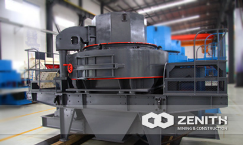
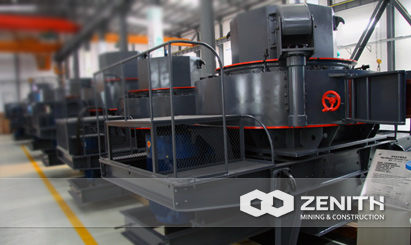
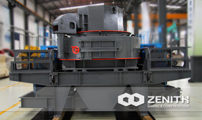
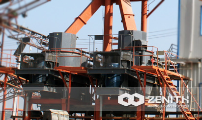

- 
- 
- 
- 
VSI Crusher
In the global mining industry, VSI crusher, with the full name Vertical Shaft Impact Crusher, also is called as sand making machine. Compared with other types of impact crushers, Zenith's B Series VSI Crusher can be considered as one of the most advanced impact crusher nowadays, which can ensure the smooth running of main unit. Sand making machine is our sole patent using central feeding & central cascade feeding, which can be changed based on customers' needs.
Widely Application of VSI crusher
VSI crushers are very suitable for making sands for building and construction, such as expressway and railway building, hydropower station construction, bridge and tunnel building, concrete batching plant, etc. When it comes to the shaping of gravels used in concrete aggregates, the B Series VSI crusher is the best choice, especially for the strength of concrete above 60°C or which required being freeze proof and leak proof. In the fine crushing section, VSI is the substitute of impact crusher, and it is much better in terms of main performance indexes. As for processing materials, the VSI crushers can be used to deal with granite, limestone, basalt, quartz, river stone, sand gravel, gold ore, iron ore, copper ore, manganese, bauxite, coal, and pebble stone, etc.
VSI Crusher Distinct Benefits And Features
- High precision roller bearing, smooth main unit running, and long service time.
- Advanced double pump oil lubrication system minimize the maintenance frequency.
- Hydraulic ft cap, easy and convenient replacement and maintenance.
- Special dustproof seal system, outside powder is prevented from entering oil mouth.
- Particular material throw head design and reasonable material selection prolong the service time.
- Unique feeding method, change between central feeding and central feeding with cascade feeding make "rock on rock" and "rock on iron" possible, both crushing and shaping are achieved.
The tacnology data
| Model | Feed at center&sides | Feed at center | Soft Material | Hard Material | REV (r/min) | Power (kw) | Motor Model | Machine Size (mm) |
|---|---|---|---|---|---|---|---|---|
| Capacity (t/h) | Max.Feeding (mm) | |||||||
| B-7611 | 120-180 | 60-90 | 35 | 30 | 1700-1890 | 4-55×2 | Y250M-4/55 | 4100×2250×2258 |
| B-8518 | 200-260 | 100-130 | 40 | 35 | 1520-1690 | 4-90×2 | Y280M-4/90 | 4140×2280×2425 |
| B-9526 | 300-380 | 150-190 | 45 | 40 | 1360-1510 | 4-132×2 | Y315M-4/132 | 4560×2450×2780 |
| B-1140 | 450-520 | 225-260 | 50 | 45 | 1180-1310 | 4-200×2 | Y315L2-4/200 | 5100×2690×3200 |